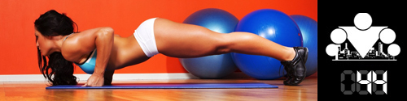

Когда мне рассказывают о том, что упражнений с собственным весом (и воркаута) недостаточно для того, чтобы привести себя в отличную форму ввиду их ограниченного набора,
мне невольно хочется улыбаться.
Помимо того, что вы можете придумать огромное число вариантов базовых упражнений и комбинаций, существует ещё целый ряд факторов, изменяя которые вы можете давать себе дополнительную
нагрузку и адаптировать свои тренировки под ваши задачи. И сегодня речь пойдет как раз об одном из таких факторов, а именно о темпе выполнения упражнений!
Темп
Понятие темпа относится к скорости выполнения упражнения, при этом само упражнение чаще всего разделяется на 3 или 4 фазы (в зависимости от того, включают начальную позицию или нет):
* начальная позиция
* позитивная фаза (мышца сокращается)
* конечная позиция
* негативная фаза (мышца распрямляется)
Например темп 0-1-0-3 будет означать, что вы сокращаете мышцы за 1 секунду (взрывная сила), делаете 0 секунд задержки в конечной точке, разгибаете мышцы за 3 секунды (медленно) и даете 0 секунд отдыха перед следующим повторением в подходе.
Одно и тоже упражнение может быть абсолютно разным по сложности, если изменять его темп выполнения, но как понять, с какой скоростью нужно делать?
Выбор темпа
Во-первых, все зависит, от ваших целей. Если ваша задача - выполнить большое количество повторений, то вы должны делать выбор в пользу быстрой скорости.
Чем меньше вы даете себе времени на выполнение упражнения, тем больше тренируете взрывную силу. Так же чаще всего во взрывном темпе тренируют не простые варианты отжиманий, а плиометрический,
там где есть элементы отталкивания от земли, хлопки, выпрыгивания и так далее. Чтобы максимально включить в работу быстрые волокна мышц. Если же ваша цель - нарастить мышцы,
то темп выполнения упражнений должен быть медленнее и время выполнения негативной фазы должно быть больше, чем время выполнения позитивной (например позитивная 2 секунды, значит негативная - 4).
Чем дольше ваши мышцы находятся под нагрузкой, тем более эффективным становится упражнение!
Во-вторых, скорость выполнения упражнения зависит от вашего уровня подготовки и от того, насколько правильна ваша техника выполнения.
Нет смысла делать быстро и криво (используя инерцию или извиваясь), потому что такой способ не даст вам желаемого результата, а может только привести к травмам.
Так что первым делом вам необходимо научиться правильной технике и обрести уверенность в выполняемых движениях, а уже потом можно думать о том, чтобы изменять темп выполнения
В-третьих, следует так же учитывать с каким темпом вы привыкли тренироваться. Я уже неоднократно говорил о том, что с течением времени ваш организм привыкает к нагрузке,
которую вы ему даёте и учится выполнять её с минимальными усилиями. Это хорошо для организма, но плохо для достижения ваших целей.
Именно поэтому нужно постоянно время от времени вносить изменения в свои тренировки! Если вы привыкли тренироваться в медленном темпе, попробуйте в среднем или быстро и наоборот,
или попробуйте добавить паузу в конечной позиции упражнения и т.д. Экспериментируйте и не давайте вашему организму адаптироваться!
Быстрый и медленный темп
Также может стоить отметить что быстрый темп или даже взрывной темп выполнения может быть очень сложным в плане правильного технического исполнения и ограничением
может выступать не только возможности мышц, но и нервной системы (яркий пример - игра на музыкальных инструментах или в игровых видах спорта обманные маневры,
которые легко разложить на движения, но трудно выполнить быстро и технически правильно). А медленный темп наоборот способствует тренировке выносливости,
в том числе и нервной системы, которой приходится передавать нервный импульс постоянной силы мышцам в течении долго времени. И соответственно для полноценного развития
(а может и для преодоления тренировочного плато), изменение темпа выполнения упражнений будет сказываться положительно.
У сверхмедленных повторений много преимуществ, которые делают их эффективным методом наращивания массы мышц. Этот метод минимизирует момент силы, чтобы максимизировать силу, прилагаемую к тренируемой мышце.
Это поможет сформировать связь между мозгом и мышцей, поскольку медленное движение заставляет сконцентрироваться на сокращении мышцы. Усталость постепенно накапливается во всех мышечных волокнах,
участвующих в движении, что снижает риск травмы при неправильном выполнении упражнения. Кроме того уменьшается нагрузка на суставы.
Проблема эго
Очень часто многие (особенно новички) отказываются от медленного темпа, потому что слишком волнуются по поводу того, что подумают о них окружающие.
К примеру, они могут сделать 5 подтягиваний за 30 секунд, медленно поднимаясь и медленно опускаясь, а могут сделать 20-25 подтягиваний за тоже самое время в максимальном темпе.
Несомненно, что на тех, кто смотрит со стороны, гораздо большее впечатление произведет второй вариант. Но ведь мы приходим на площадку не для того, чтобы поразить кого-то своей тренировкой, верно?
Мы приходим для того чтобы заниматься, для того чтобы становиться более здоровыми, сильными и красивыми!
Поэтому, когда мы тренируемся, мы должны думать только своей тренировке и своих целях и делать только то, что будет приближать нас к желаемому результату!